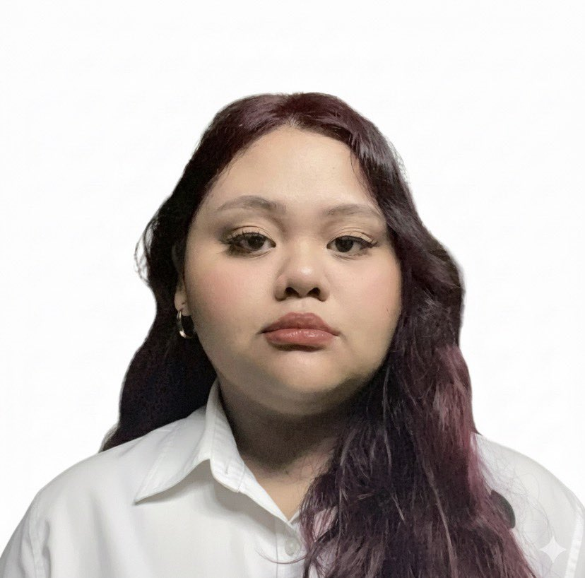
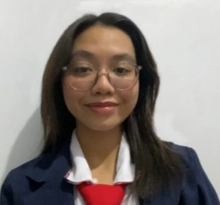

BAYAN-IKI



Lois Lane Z. Adriano
Web / UIX Designer

Lorea Bianca V. Quindipan
Content Manager
This website provides an accessible digital wiki about Philippine heroes, highlighting their lives and contributions. It encourages curiosity, patriotism, and appreciation of history.
Email: bayaniki@gmail.com
Contact Number: 0951 652 9503